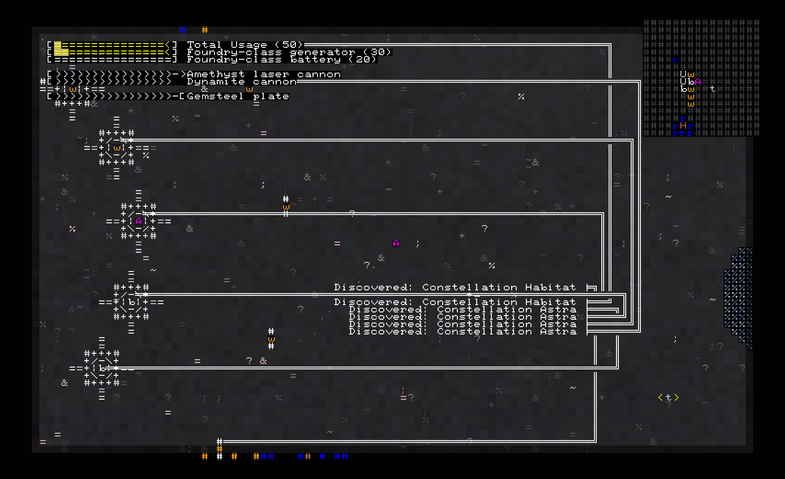
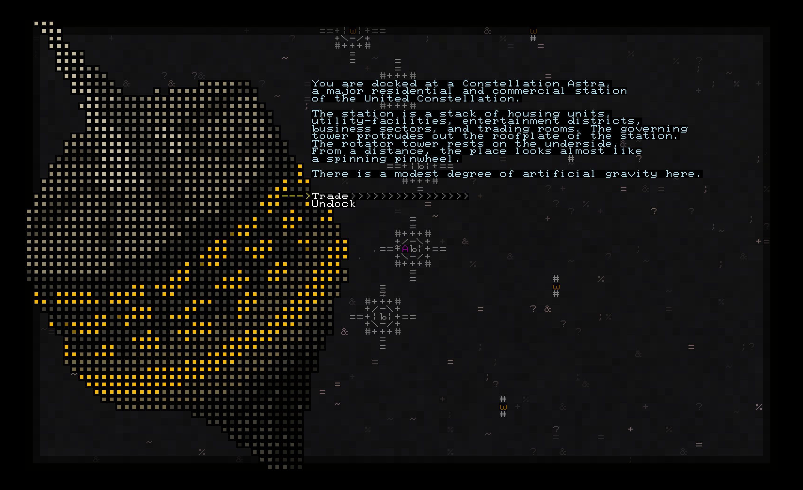

Introduction
Rogue Frontier is a story-rich, real-time, grid-based, ASCII-style, space-opera roguelike set in an alternate universe of Transcendence, the space opera roguelike by George Moromisato.
In the year 2400, humanity occupies the void beyond Earth, yet conflict and destruction escalate to a level never seen before. Communications break down across the distance, and peace begins to fall apart once again. For those who seek a new kind of answer, the Voices make themselves heard.
Voices of the Void
The Orator
Voice of reasonable order
The Dictator
Voice of unreasonable order
The Debater
Voice of reasonable chaos
The Rhetor
Voice of unreasonable chaos
In a dream, you meet the Orator and receive several visions followed by a simple message: If you seek an answer, then you shall find it at the Galactic Core.
You byy yourself a starship and locate a nearby outpost of the Followers of the Orator. There, you may find guidance on reaching the Core. What happens next is up to you.
Choose a ship
Buy your first starship and upgrade your weapons, shields, armor, and reactor as you go.
Amethyst-class yacht

A aesthetically-pleasing general-purpose ship for wealthy buyers. The Amethyst strikes a balance between weapon firepower, cargo capacity, and engine power.
Beowulf-class gunship

A combat-oriented ship for highly aggressive pilots. The Beowulf is armed with fast engines and faster lasers.
Wagon-class freighter

A merchant's ship with plenty of space for cargo and devices. The Wagon is armed with an omnidirectional cannon for easy aiming.
Navigate the field
You are but a small character in the universe. Move your ship with the arrow keys, inspect your surroundings with the minimap / megamap, and watch where you're heading!
Dock at the station
Take a rest at a station (or board a wreck), trade some items (or loot some), and advance the story (or just find things to read).
Meet the sovereigns
There are many factions, each with their own problems and enemies. Help them or harm them, and face the consequences.
- The United Constellation is your old home and the target of warlords and pirates
- The Followers of the Orator provide shelters for the Orator's surviving pilgrims.
- The Orion Warlords terrorize Constellation citizens with high-velocity weapons.
- The Iron Pirates sustain themselves by seizing resources through force
Travel the stars
Enter the stargate network to travel across star systems.
Development
Rogue Frontier is a project supported entirely by one developer's free time. As such, it is a work in progress. Story and content may be limited, but functionality and aesthetic shall always be polished.
Enter the Rogue Frontier
This game requires .NET 5.0 to play.
Rogue Frontier is (C) 2021 by Alex M. Chen, also known as "Archcannon" or "INeedAUniqueUsername"
Transcendence is property of Kronosaur Productions.
Rogue Frontier is not affiliated with Kronosaur Productions in any way.